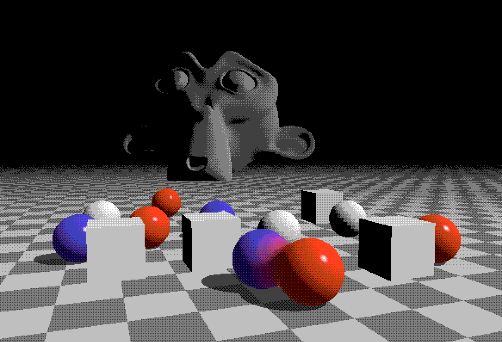
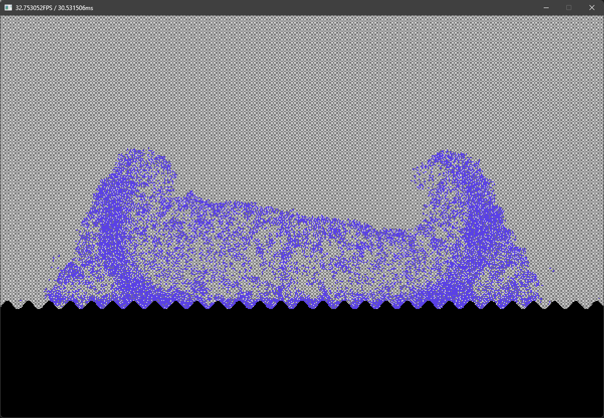

Summary
A custom 2D game engine built from scratch in C++ with OpenGL, utilizing signed distance functions (SDFs) for both rendering and physics calculations.
- ECS Architecture: Designed a light Entity Component System to structure components cleanly and keep logic decoupled.
- Custom Physics Engine: Optimized collision detection and response specifically for Signed Distance Fields.
- Fast SDF Renderer: High-performance GLSL ray marching shaders adapted for 2D real-time simulation.
The Story & Architecture
This project originally started as an ambitious 3D renderer engine that seamlessly combined traditional triangle rasterization with 3D SDF Ray Marching. While achieving hybrid rendering was a rewarding challenge, scaling 3D ray marching for complex scenes exposed major performance bottlenecks without complex acceleration structures.
The retro aesthetics were a technical constraint rather than purely stylistic: because rendering complexity grew exponentially with object count, moving the engine to 2D allowed adapting the rendering pipeline to scale linearly. As an added bonus, 2D physics required less complexity, enabling the custom physics solver to comfortably run thousands of objects simultaneously.

